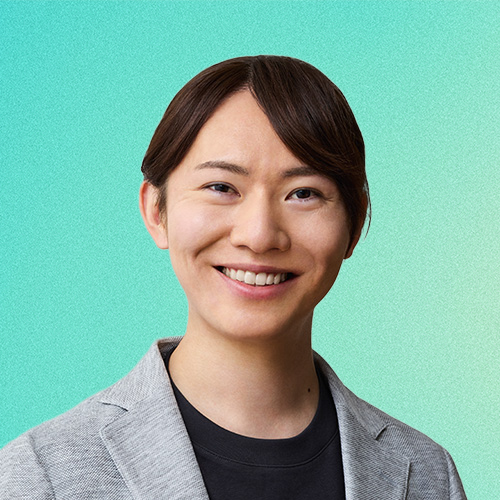
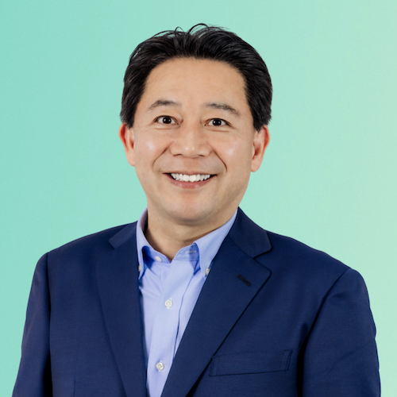
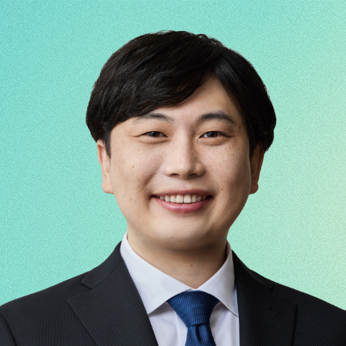
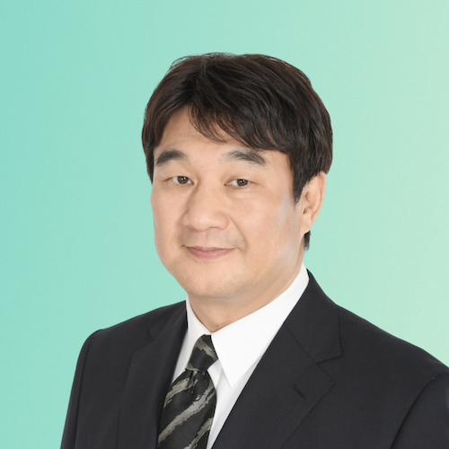
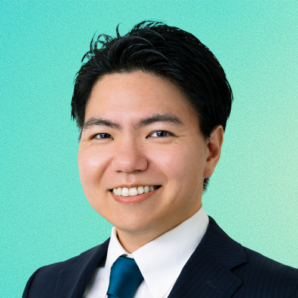
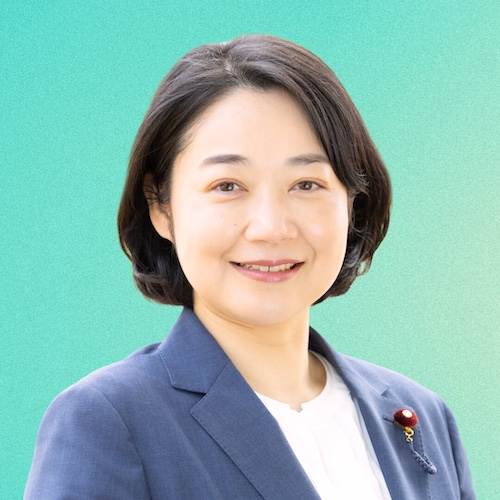

安野 貴博
参議院議員
比例区
チームみらい党首。エンジニアとして AI スタートアップを創業。デジタルを通じた社会システム変革に携わる。
チームみらいの国会議員団メンバーを、プロフィールと主要SNSリンク付きで紹介します。
選挙区を選択してください

参議院議員
比例区
チームみらい党首。エンジニアとして AI スタートアップを創業。デジタルを通じた社会システム変革に携わる。

衆議院議員
比例東京（東京26区）
元衆議院議員。松下政経塾卒。国民の生活を暮らしやすくするルール作りに注力。
衆議院議員
比例南関東
教育系企業勤務。ひとりひとりが未来を信じられる社会づくりに注力。

衆議院議員
比例南関東（千葉5区）
エンジニア。ドワンゴ、DeNA を経て投資会社で起業支援。社会のバグに立ち向かう。
衆議院議員
比例東海
国会対策委員長。東京大学卒業。在学中にまちづくりの IT スタートアップを立ち上げ。
衆議院議員
比例東京
幹事長。戦略コンサル、AI スタートアップで事業開発に従事。テクノロジーで未来へ投資。

衆議院議員
比例東京（東京2区）
脚本家・小説家。元日立製作所研究員。コンテンツと AI で日本を成長させる。
衆議院議員
比例東北
学校職員。北海道教育大学卒業。生徒への進路・生活サポートに従事。現場視点で政治に取り組む。

衆議院議員
比例九州
子どもたちが挑戦をあきらめなくていい日本を目指す。地域と未来をつなぐ活動に従事。
衆議院議員
比例東京（東京7区）
政務調査会長。金融・IT ベンチャーでの経営経験を活かし、次の世代に安心して残せる社会を実現。

衆議院議員
比例北関東
組織活動本部長。IT 分野での 18 年の経験と現場の声をもとに、安心して学べる社会を実現。
衆議院議員
比例南関東
前川崎市議会議員。ソニー・ミュージック、教育事業等を経て市議 2 期。子どもたちの未来へ投資。